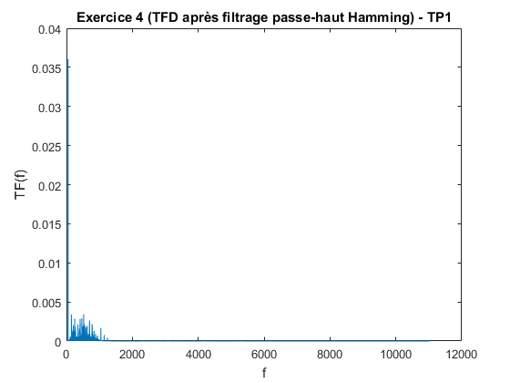
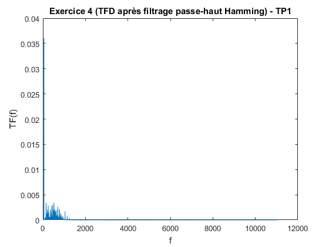

Contents
% Loïc LERAT 1920881 % Simon-Pierre DESJARDINS 1739351
Nettoyage du workspace
clear all; close all; clc;
Exercice I
Signaux simples
x = 0:pi/13:7*pi; Y = @(x) sin(x); C = @(x) 2.8 + 0*x; moy = 0.1; varia = 0.4; B = @(x) moy + sqrt(varia)*randn(size(x)); Z = @(x) (Y(x) + C(x) + B(x)); moyenneZ = mean(Z(x)); varianceZ = var(Z(x)); display(moyenneZ); display(varianceZ); hold on; plot(x, Y(x), '--'); plot(x, C(x), '--'); plot(x, B(x), '--'); plot(x, Z(x)); grid on; legend("Y","C", "B","Z"); title("Exercice 1 - TP1");
moyenneZ =
2.9326
varianceZ =
0.7766
Exercice II
Echantillonage
%1. Nous considérons que le signal analogique est composé de 3 signaux de %fréquences différentes. Nous utilisons alors la notion de spectre et la %forme de chaque signal x(t) = c*cos(2*pi * t/To). %Sachant que fo = 1/To, nous avons : %- 2*pi * t/To = 165*pi*t ==> fo = 82.5 Hz %- 2*pi * t/To = 6*pi*t ==> fo = 3 Hz %- 2*pi * t/To = 80*pi*t ==> fo = 40 Hz %2. Y = @(t) 2*sin(165*pi*t) + 13*cos(6*pi*t) + 3*cos(80*pi*t); t = 0:1/20:1; subplot(2,3,1); plot(t, Y(t)); title("Exercice 2 - TP1 (20 Hz)"); xlabel("t"); ylabel("Y(t)"); t = 0:1/75:1; subplot(2,3,2); plot(t, Y(t)); title("Exercice 2 - TP1 (75 Hz)"); xlabel("t"); ylabel("Y(t)"); t = 0:1/100:1; subplot(2,3,3); plot(t, Y(t)); title("Exercice 2 - TP1 (100 Hz)"); xlabel("t"); ylabel("Y(t)"); t = 0:1/160:1; subplot(2,3,4); plot(t, Y(t)); title("Exercice 2 - TP1 (160 Hz)"); xlabel("t"); ylabel("Y(t)"); t = 0:1/180:1; subplot(2,3,5); plot(t, Y(t)); title("Exercice 2 - TP1 (180 Hz)"); xlabel("t"); ylabel("Y(t)"); t = 0:1/330:1; subplot(2,3,6); plot(t, Y(t)); title("Exercice 2 - TP1 (330 Hz)"); xlabel("t"); ylabel("Y(t)"); %3. Plus la fréquence d'échantillonage est élevée, plus la courbe est précise et se rapproche de la forme % réelle du signal analogique %4. Sachant que la frequence optimale Fe doit être au moins égale au double %de la fréquence maximale du signal analogique (théorème de Shannon) et considérant que la %fréquence maximale de notre signal analogique est 82.5 Hz , notre %fréquence d'échantillonnage doit être d'au moins 165Hz. Les seules %fréquences d'échantillonnage qui satisfont le théorème de Nyquist-Shannon %sont 180Hz et 330Hz. %La fréquence d'échantillonage optimale serait donc 180 Hz
Exercice III
Analyse Spectrale
%1. Y1 = @(t) 5*sin(2*pi*4*t); Y2 = @(t) 3*sin(2*pi*45*t); Y3 = @(t) 2*sin(2*pi*70*t); t = 0:1/250:1; hold on; plot(t, Y1(t), '--'); plot(t, Y2(t), '--'); plot(t, Y3(t), '--'); %2. Par lecture graphique : % Y1 : To = 1/4 % Y2 : To = 1/40 % Y3 : To = 1/70 % Valeurs théoriques (en suivant la même méthode que dans l'exercice précédent) % Y1 : To = 1/4 % Y2 : To = 1/45 % Y3 : To = 1/70 % On constate que les valeurs correspondent %3. En définissant notre domaine des x de 0 à 5, nous pouvons %remarquer que des motifs semblent se répéter à chaque période de 1. De %manière analytique, il suffit de trouver le plus grand diviseur commun des %fréquences (4hz, 45hz, 70h), celui-ci est égal à 1. Cela se traduit en %une période de 1 ce qui confirme notre lecture graphique. Z = @(t) (Y1(t) + Y2(t) + Y3(t)); plot(t, Z(t)); legend("Y1","Y2", "Y3", "Z"); title("Exercice 3 - TP1"); xlabel("t"); ylabel("Y(t)"); %4. figure; hold on; %On limite le domaine des fréquences selon la fréquence des signaux de Y1, %Y2, Y3 f = linspace(-125,125,length(t)); %Nous divisions par le nombre de points pour obtenir l'amplitude / 2. Il %suffit de multiplier par 2 pour obtenir l'amplitude réelle du signal. plot(f,fftshift(abs(fft(Y1(t))))/length(t) * 2); plot(f,fftshift(abs(fft(Y2(t))))/length(t) * 2); plot(f,fftshift(abs(fft(Y3(t))))/length(t) * 2); legend("Y1","Y2", "Y3"); title("Exercice 3 (TFD) - TP1"); xlabel("f"); ylabel("Y(f)"); %Nous remarquons que l'abscisse des pics correspond aux fréquences que nous %avons trouvé pour chacun des signaux. Nous avons également une symétrie %des fréquences que nous avons obtenu avec fftshift. Au départ, nous avions %également les mauvaises amplitudes, cela était causé par le fait qu'elles %étaient multipliées par le nombre de points dans notre graphique. C'est %pourquoi nous avons divisé notre résultat de fft par le nombre de points. %On prend uniquement la partie réelle de la TFD, la partie imaginaire %(correspondant à la phase) ne nous intéresse pas ici. Finalement, nous %remarquons que nous n'avons pas de pics parfaits (dirac). Cela vient du %fait que notre signal n'est pas infini. Or, la TFD est une convolution du %sinus et du rectangle de la fenêtre d'analyse. La TFD du sinus est un %dirac tandis que la TFD de la fenêtre d'analyse est un sinus cardinal. %Nous obtenons alors un sinus cardinal translaté à la position du dirac. %5. figure; hold on; %On limite le domaine des fréquences selon la fréquence de Z f = linspace(-125,125,length(t)); plot(f,fftshift(abs(fft(Z(t))))/length(t) * 2); legend("Z(t)"); title("Exercice 3 (TFD) - TP1"); xlabel("f"); ylabel("Z(f)"); %On obtient une TFD similaire (les pics sont situés aux mêmes fréquences et %sont de même amplitude). Nous remarquons alors que la TFD est linéaire, ce %qui veut dire que la somme des TFD de signaux est équivalente au TFD de la %somme des signaux.
Exercice IV
Filtrage audio
%1. [Data,Fe] = audioread('audio.wav'); %sound(Data,Fe); %En écoutant le signal, nous entendons un "buzz" tout au long de la chanson %qui semble être un signal de haute fréquence avec un son très aigu. Il %semble également y avoir une perturbation de basse fréquence comme un %bourdonnement. %2. f = linspace(0,Fe,length(Data)); TF = abs(fft(Data))/length(Data); %On a aussi divisé notre graphique pour ne traiter qu'une partie du signal %qui nous intéresse qui correspond à la moitié des valeurs du vecteur TF. %De base, le graphe présente une symétrie des fréquences, pour obtenir %l'amplitude réelle, il faudra donc multiplier par 2 les amplitudes dans le %domaine qui nous intéresse (sauf à l'abscisse 0 car nous sommes sur l'axe %de symétrie. TF(2:length(Data)) = TF(2:length(Data))*2; plot(f(1:length(f)/2+1),TF(1:length(TF)/2+1)); title("Exercice 4 (TFD) - TP1"); xlabel("f"); ylabel("TF(f)"); %3. Nous percevons clairement deux perturbations (deux pics). La %perturbation la plus haute fréquence a une fréquence de 1244Hz ce qui %correspond à une note ré# d'octave 5. %4 b = fir1(128, 950/(Fe/2)); pb = filter(b,1,Data); TFPB = abs(fft(pb))/length(pb); TFPB(2:length(pb)) = TFPB(2:length(pb))*2; figure; plot(f(1:length(f)/2+1),TFPB(1:length(TFPB)/2+1)); title("Exercice 4 (TFD après filtrage passe-bas) - TP1"); xlabel("f"); ylabel("TF(f)"); %sound(pb,Fe) %On choisit de manière arbitraire une fréquence de coupure de 950Hz %pour atténuer la plus haute fréquence. Avec cette fréquence de coupure, on %semble avoir presque complètement atténué la perturbation haute fréquence à l'écoute. %Nous observons une perte d'information au niveau des hautes fréquences au %dessus de 950 Hz correspondant à notre fréquence de coupure. Les %fréquences entre 950 et 1250Hz sont plus ou moins atténuées tandis que les %fréquences au-dessus ne seront plus perceptibles à l'écoute. Nous perdons %alors différents sons composant la musique. %Pour éviter de perdre trop d'information tout en coupant la fréquence de %perturbation, il nous faudrait un filtre ciblée sur cette fréquence qui %n'attenue qu'une certaine zone autour d'elle %5 cheb = fir1(128,250/(Fe/2),'high', chebwin(129,30)); hamm = fir1(128,250/(Fe/2),'high', hamming(129)); blackm = fir1(128,250/(Fe/2),'high', blackman(129)); %6 freqz([dfilt.dffir(cheb),dfilt.dffir(hamm), dfilt.dffir(blackm)]); legend("Chebyshev","Hamming", "Blackman"); %On constate que la réponse fréquentielle diffère selon le filtre. Ainsi, %on peut s'attendre à ce que Chebyshev soit le filtre qui attenue le plus %les basses fréquences et Blackman est celui qui atténue le moins. Pour ce %qui de Hamming, il se situe entre les deux et nous estimons qu'il %atténuera modérément les basses fréquences. %7 chebFilter = filter(cheb,1,pb); hammFilter = filter(hamm,1,pb); blackmFilter = filter(blackm,1,pb); %sound(chebFilter,Fe); %sound(hammFilter,Fe); %sound(blackmFilter,Fe); %On remarque que la perturbation basse fréquence n'est plus présente après %filtrage passe-haut. A l'oreille il est difficile de percevoir une %différence entre les trois types de filtres passe-haut. %On retrouve un problème similaire au filtre passe-bas : en attenuant toutes %les fréquences plus basses que 250Hz, cela nous permet d'éliminer la %perturbation mais on risque de perdre des fréquences intéressantes de la %musique (instruments graves tels que la basse ou la batterie). %8 %TFD Chebyshev TFPHC = abs(fft(chebFilter))/length(chebFilter); TFPHC(2:length(chebFilter)) = TFPHC(2:length(chebFilter))*2; figure; plot(f(1:length(f)/2+1),TFPHC(1:length(TFPHC)/2+1)); title("Exercice 4 (TFD après filtrage passe-haut Chebyshev) - TP1"); xlabel("f"); ylabel("TF(f)"); %TFD Hamming TFPHH = abs(fft(hammFilter))/length(hammFilter); TFPHH(2:length(hammFilter)) = TFPHH(2:length(hammFilter))*2; figure; plot(f(1:length(f)/2+1),TFPHH(1:length(TFPHH)/2+1)); title("Exercice 4 (TFD après filtrage passe-haut Hamming) - TP1"); xlabel("f"); ylabel("TF(f)"); %TFD Blackman TFPHB = abs(fft(blackmFilter))/length(blackmFilter); TFPHB(2:length(blackmFilter)) = TFPHB(2:length(blackmFilter))*2; figure; plot(f(1:length(f)/2+1),TFPHB(1:length(TFPHB)/2+1)); title("Exercice 4 (TFD après filtrage passe-haut Blackman) - TP1"); xlabel("f"); ylabel("TF(f)"); % On remarque sur les TFD que la fréquence de perturbation basse est bien % atténuée (l'amplitude diminue nettement). Comme nous le supposions à la % question précédente, Chebyshev est le filtre qui attenue le plus %(amplitude de 6.5x10-3), suivi par Hamming(amplitude de 0.036) puis %Blackman (amplitude de 0.1). Nous pensons que les spectres correspondent %également à ce que nous avons entendu malgré que la différence était %beaucoup plus difficile à distinguer à l'oreille qu'avec les spectres.
 
